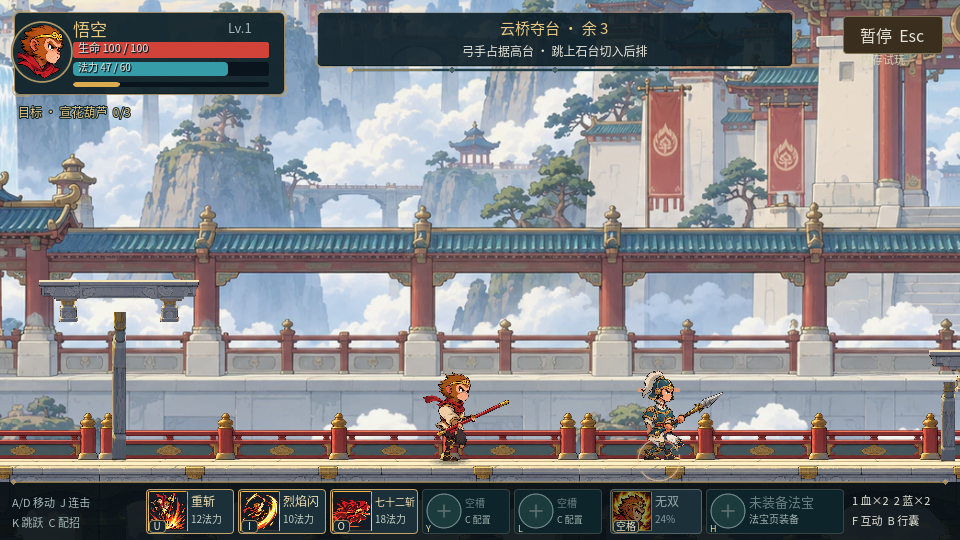
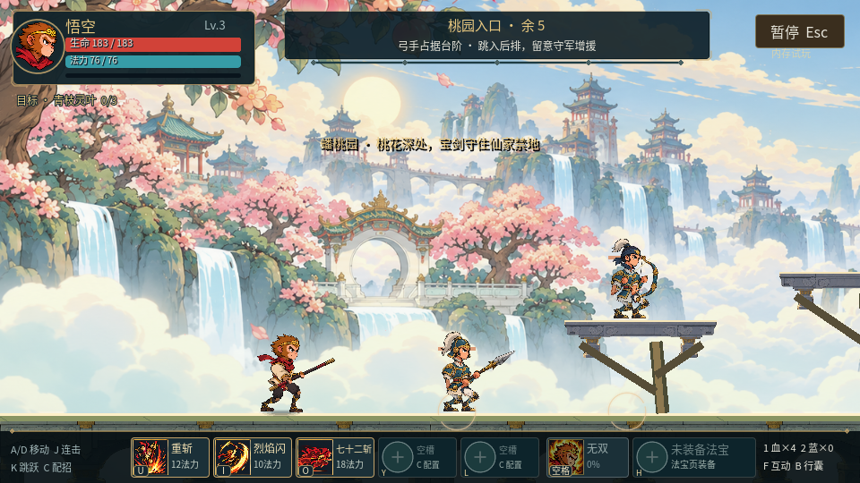
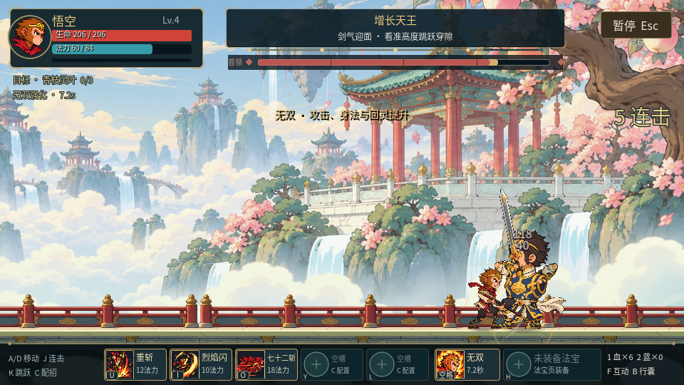
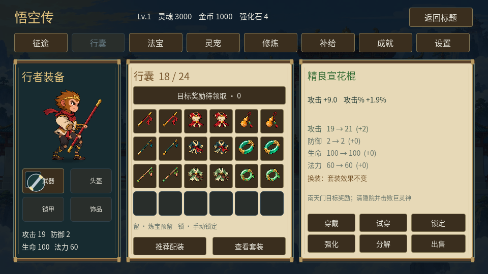
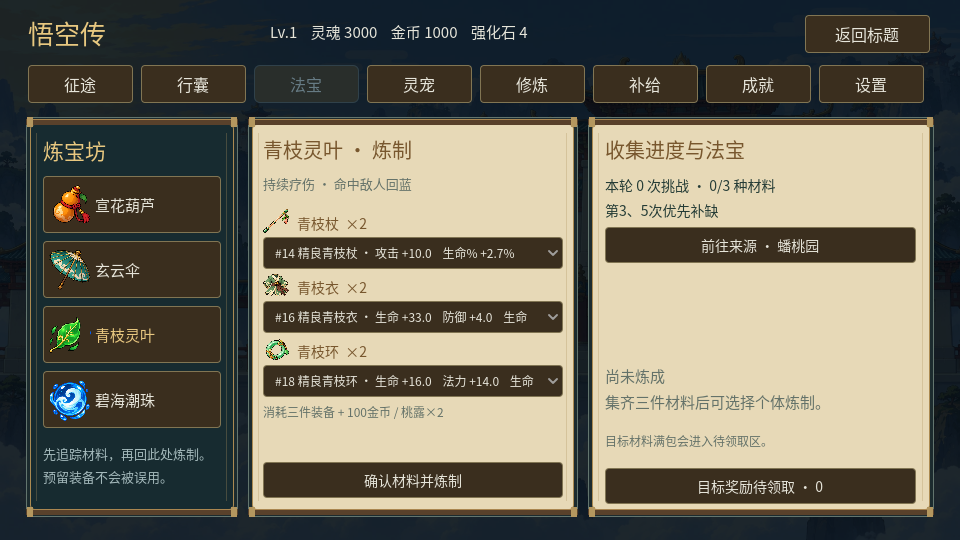
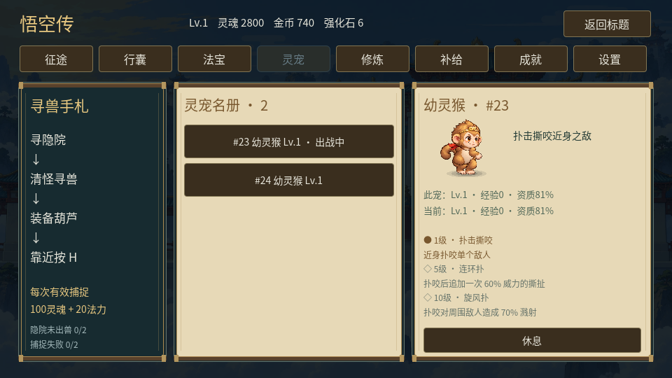

桃园新章
从南天门到蟠桃园，统一角色动作与新绘敌人，带着明确目标收集青枝装备。
电脑浏览器 · 试玩仅内存进度。A/D 移动、J 普攻、K 二段跳、U/I/O/Y/L 技能、空格无双、H 法宝、F 互动。先通过南天门进入蟠桃园。
实机画面
 R4 南天门
R4 南天门
R5 南天门 · 远景层次与平台支撑

连续动作
原生960×540动作样片。增长天王与飞妖使用新绘透明分件，保留现有命中时钟。动作样片用于检查衔接，并非整关真人试玩。
装备、炼宝与灵宠



击败增长天王取得一件青枝材料，第3、5次优先补缺。保留材料可在3–5次完整挑战内凑齐三种；在炼宝坊选择具体装备，再比较成长和五行。青霄套继续掉落，桃根支路可自由探索。
界面截图使用填充过的测试存档，展示比较功能；新试玩不会赠送截图中的装备与资源。
两关完整流程验证
自动键盘输入从新内存进度完成两关和支路，用于核验流程、奖励与连续画面。它不代表真人初次通关时间或主观品质验收。欢迎按实际手感、造型与关卡节奏反馈。
本轮原生实机与网页资源核验完成。当前 Work 设置关闭了浏览器自动操作，新的浏览器按键、暂停恢复和刷新验证仍待完成。